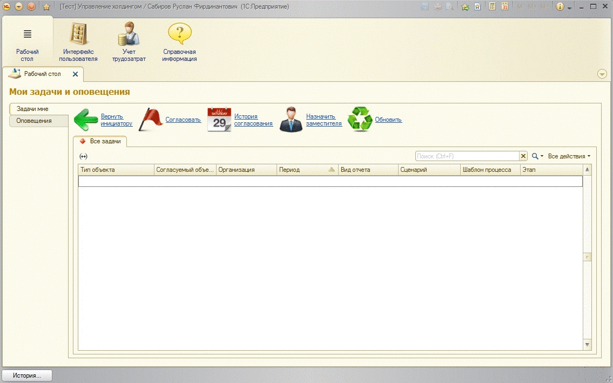
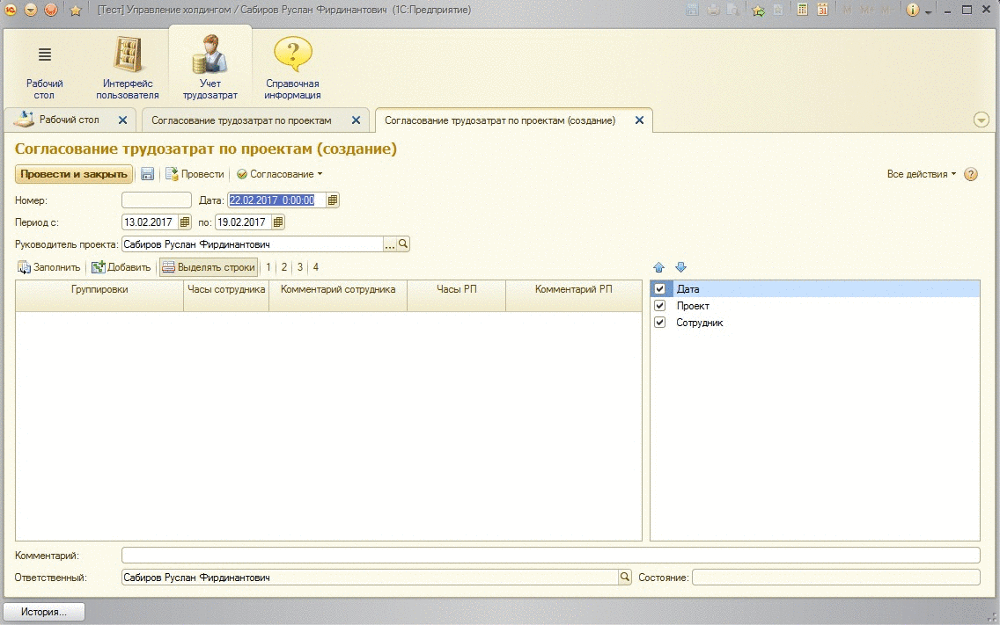
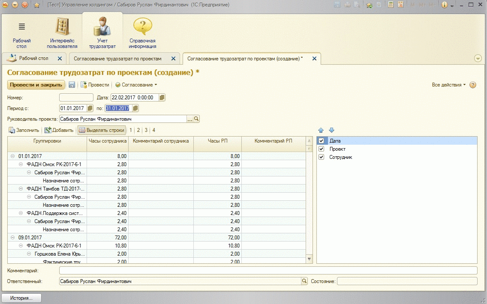
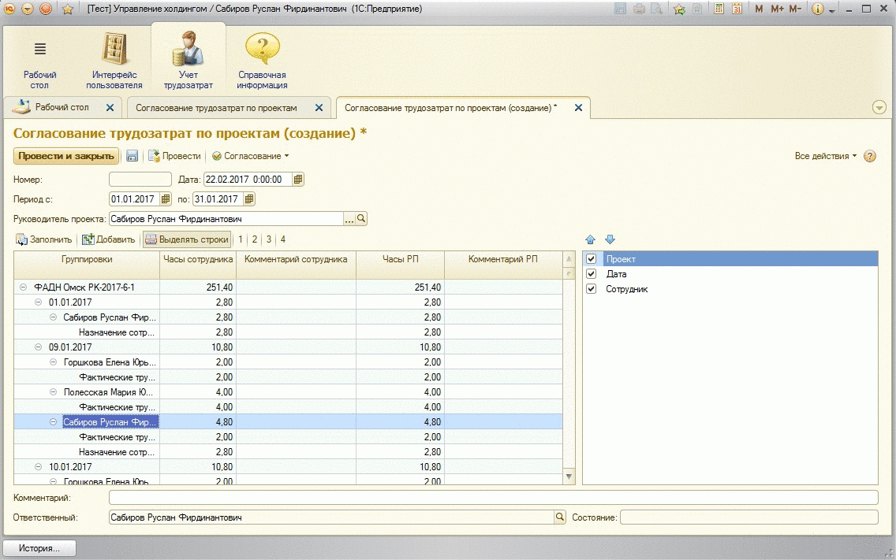
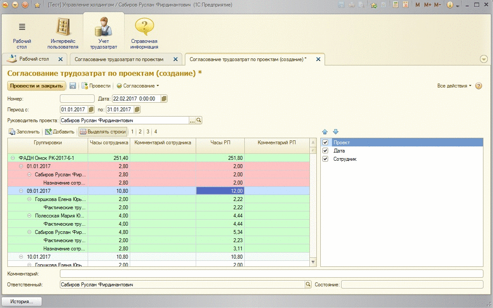

1. Создание документа "Согласование трудозатрат по проектам"
Для создания документа "Согласование трудозатрат по проектам" необходимо:

2. Заполнение документа "Согласование трудозатрат по проектам"
Для заполнение документа необходимо выполнить следующие операции:

3. Проверка и корректировка трудозатрат"
Для удобства проверки трудозтарат по проекту можно воспользоваться возможностью группировки данных трудозатрат в правой части формы документа. Для этого необходимо раположить группировки в нужной последовательности. Для сворачивания/разворачивания дерева данных можно воспользоваться кнопками меню [1|2|3|4]

Корректировку трудозатрат необходимо осуществлять в колонке "Часы РП". Корректировку можно усуществлять как на детальном уровне, так и на более высоком уровне (пересчёт детальных записей осуществляется пропорционально ранее внесённым данным). Для выделения откорректированных строк необходимо "активировать" кнопку "Выделять строки".
В колонке "Комментарий" можно указать комментарий.

3. Сохранение и отправка на согласование в HR"
Для сохранения внесённых данных и пердачи их на последующее согласование в HR необходимо выполнить следующие действия:
